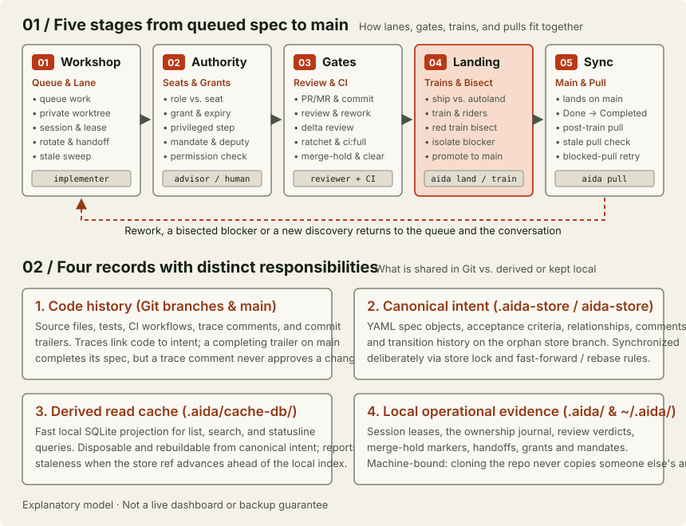
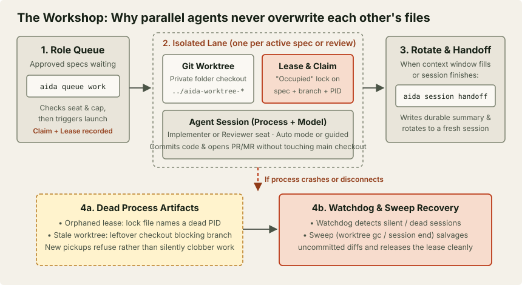

THE GOVERNED SOFTWARE FACTORY
From a conversation to a maintainable system

AIDA connects the work people and agents do with the intent behind it. Start with a conversation, develop the system, and keep enough structured context for the next bounded change. You can remain involved throughout or delegate selected stages under the project's policy.
When many agents work in parallel, you will see operational terms in status views, logs and handoffs: lanes, worktrees, leases, lock files, delta reviews, ratchets, merge holds, merge trains, riders, bisect, post-train pulls, and the state enums that drive them. This guide walks through the six stages of that workflow in plain language so you do not need to be a Git or AIDA specialist to read what the system is doing.
The collaboration loop
- Discuss the outcome. A person and coding agent explore the problem, constraints and alternatives. The person can develop, challenge and review the work throughout.
- Capture agreed intent. The agent records each spec, its intent, verifiable acceptance criteria, and consequential architecture decisions (ADRs) in the project graph. Ask to inspect the record before implementation.
- Own a bounded change. Each bounded change is assigned an execution mode, a role, and a session. Isolated worktrees give separate changes their own checkout; leases and queue state coordinate ownership.
- Implement and validate. Build the agreed behavior inside a sandbox, link it to its specs and run the relevant checks. New discoveries can require revised intent or a separate decision.
- Review independently. In the governed PR workflow, a separate reviewer performs an independent review of the current head commit and its evidence (using AIDA's deterministic & adversarial code review engine). The author's self-check is useful preparation and does not constitute independent approval.
- Integrate under policy. The authorized landing path checks the applicable ledgers and gates. Integration can lead to another conversation; a merged change and a released milestone are separate steps.
These are stages in an operating model, not a promise that every project uses one autonomy mode. The configuration guide explains how execution mode, guidance and authority remain distinct. The graphic is explanatory, not a live dashboard.
How an idea becomes realized: four human-perspective workflows
From your seat at the keyboard, you do not have to manage worktrees, leases, or gate ledgers by hand. You start with an idea — a feature request, a bug report, or an architectural improvement — and choose how closely you want to steer it. The flowchart below shows how an idea moves from initial conversation into one of four workflows based on its clarity and risk.

| Workflow | When You Pick It | What You Do at the Keyboard | What AIDA & Agent Lanes Do | How It Reaches main |
|---|---|---|---|---|
0. Decide & Clarify (decide) | The idea has unresolved product or design questions | Run /aida-grill or aida decide to answer the open fork and tighten acceptance criteria | Refuses to launch an implementation lane until the fork is resolved | Transitions to guided, drive, or drain once clarified |
1. Interactive Guided (guided) | High-risk keystone, security, containment, or gate changes | Pair step-by-step via /aida-guided-implement; inspect the diff and run aida merge-hold clear | Co-authors each slice with you in the session and places a mandatory merge hold | Passes independent review + ci:full, then you clear the hold and ship |
2. Supervised Drive (drive) | A well-scoped feature where you want to inspect the PR before merge | Approve with aida approve <spec> --mode drive, run aida do <spec>, and review the resulting PR | Spawns an isolated lane and worktree, writes code + tests, opens the PR, and holds for you | Reviewer seat approves head; you clear the hold and run aida pr ship |
3. Autonomous Drain & Train (drain) | A de-risked backlog of stories or bug fixes with clear acceptance criteria | Groom the queue (/aida-backlog-groom), optionally start a mandate, and run aida pull later | Orchestrates implementer + reviewer lanes, runs delta reviews, and batches riders on a merge train | Autoland merges green trains (or bisects red ones) and auto-bumps specs to Completed |
Tracing one feature end-to-end (Steps 1 to 10)
To see how all the roles and terms fit together in practice, follow a single feature idea — *"Add jittered retry backoff to the webhook client"* — across the five swimlanes below:
- Steps ①–② (You and the Advisor seat): You describe the webhook retry idea in plain English. The agent captures a
Draftspec with explicit intent and acceptance criteria (for example, maximum retry count, exponential backoff formula, and error codes). In the advisor seat, you bless the spec (aida approve <spec> --mode drain), which checks the project graph to confirm noBlockedBydependency is still unfinished. - Steps ③–④ (The Implementer lane): Running
aida queue workallocates an isolated lane: AIDA creates a sibling Git worktree on disk, writes a session lease bound to the agent process, and starts the implementer inside a sandbox. Your main checkout stays completely untouched while the implementer writes the retry logic, runs unit tests, commits with a commit trailer, and opens a pull request (moving the spec toDone). - Steps ⑤–⑦ (Independent Review, Rework and Delta Review): Fast CI runs compilation and static ratchets while AIDA routes a review story to the reviewer seat. Suppose the independent reviewer spots a missing timeout check and records
Changes Requested. AIDA places a rework merge hold and triggers a rework round (aida rework). The implementer pushes a follow-up commit, and the reviewer runs a targeted delta review of the new head commit, recording anApprovedverdict that automatically releases the rework hold. - Steps ⑧–⑩ (Merge Train, Landing and Post-Train Pull): Now a main-track candidate, the pull request boards the merge train as a rider alongside other approved PRs. The train runs the seven-shard full CI tier (
ci:full) once for the combined batch. When it finishes green, the batch lands on main, and your next post-train pull (aida pull) syncs the code and auto-bumps the spec toCompleted.
Act 1: The workshop — queues, lanes, worktrees, leases and rotation
If two people or agents edit the same folder at the same time, they overwrite each other's files. AIDA prevents that by giving each active task its own isolated lane.

- Backlog, grooming, batches, queues and pickability. Newly captured specs start in the backlog. An advisor runs
aida groom(groom) to tighten acceptance criteria, assign an execution mode, optionally group related specs into a batch (batch:<name>), and route Approved specs into a role's queue. Runningaida queue work(a launch) evaluates pickability across the project graph for blockers, verifies that the seat is free and within the host concurrency cap (cap), and spawns an agent process and AI model inside a sandbox (using auto mode or interactive guided mode according to the spec's execution mode and the session's autonomy mode). - Lane and Git worktree. Each launched task runs in its own lane backed by a dedicated Git worktree — a separate directory on disk checked out to that task's branch. Five implementer lanes can compile and run tests side by side without touching your main checkout.
- Session, claim and lease. When a lane starts, AIDA moves the spec to InProgress and records a session, a claim on the spec or pull request, and an on-disk lease tied to the running process. The lease is an "occupied" sign: another session cannot pick up the same work while the lease is live.
- Handoff and rotate. Long conversations eventually fill an AI model's context window. Before that happens, the session writes a handoff note summarizing what is done and what remains, and AIDA can rotate a fresh session into the seat without losing progress.
- Orphaned leases, stale worktrees, GC and sweeps. If an agent process crashes or loses power without ending cleanly, its lease record is left behind as an orphaned lease and its folder becomes a stale worktree. AIDA refuses to silently overwrite uncommitted work; instead, the watchdog flags the dead session and a cleanup sweep or garbage collection pass (
aida worktree gc, see GC) salvages any work and frees the branch.
Lane vs Git worktree and lock file vs session lease
Newcomers often wonder how a lane differs from a worktree, and how an OS lock file differs from a session lease. These two tables separate the concepts:
| Dimension | Lane | Git Worktree |
|---|---|---|
| What it is | The complete operational unit of isolated work in AIDA | A secondary filesystem checkout directory created by git worktree add |
| What it contains | Assigned spec or PR scope + role seat + grant + lease + agent process + branch + checkout | Just the checked-out source files on disk (../aida-<scope>) sharing .git object storage with the main repo |
| Lifecycle | Starts on aida queue work; monitored by the watchdog; ends on aida session end | Created during lane setup; becomes a stale worktree if the session dies until reclaimed by aida worktree gc |
| Analogy | An active surgery bay with a scheduled patient, surgeon, badge, and chart | The physical room and operating table alone |
| Dimension | OS Lock File (.lock) | Session Lease (.aida/sessions/<id>.toml) |
|---|---|---|
| Purpose | Mutual exclusion for a single atomic file read-modify-write | Workflow ownership of a spec, branch, worktree, or PR across an entire work session |
| Typical duration | Milliseconds to seconds (one CLI command call) | Minutes to hours (across dozens of commits, builds, and tool calls) |
| Where it lives | Store writer lock (.aida-store/.aida-write.lock), grant locks (~/.aida/session-grant-locks/<id>.lock), Git index.lock | .aida/sessions/<id>.toml (and pooled worktree lease metadata) |
| How it releases | Kernel flock releases automatically if the CLI process exits or crashes (except stray Git .lock files, which need a pull fix) | Released explicitly by aida session end; if the owning agent process dies, it becomes an orphaned lease for explicit recovery |
Role vs seat and conversation vs session
Two other pairs of words sound similar in everyday chat: role vs seat (including the runner seat) and conversation vs session. Keeping them distinct clarifies how authority and context work:
| Dimension | Role | Seat (and Runner Seat) |
|---|---|---|
| What it is | The job title and instruction profile (advisor, implementer, reviewer, integrator, product) | The operational station and authority slot in the build loop occupied under a verified grant |
| What it controls | What you see: role instructions, default prompts, statusline badge, and queue filter | What you may do: taking privileged steps, enforcing single-driver occupancy, or running host jobs |
| How it is set | Env label (AIDA_SESSION_ROLE) or --role flag — confers zero authority by itself | Minted at an interactive terminal with aida role enter <seat> or delegated as a child grant |
| Runner seat special case | Names which role a scheduled task or job targets | A runner seat is the seat held or served by a host runner: aida deputy shell run requires the advisor runner seat (RUNNER_SEAT), and headless lanes attach a host lane-job runner (aida lane job run) to the implementer seat's lease |
| Dimension | Conversation | AIDA Session |
|---|---|---|
| What it is | One chat transcript with an AI model inside Claude Code, Codex, or Antigravity | One tracked unit of work ownership (.aida/sessions/<id>.toml) binding a seat, lease, and worktree to a scope |
| What bounds it | Bounded by the model's token context window | Bounded by the lifecycle of the assigned spec or review (aida session start → aida session end) |
| How they map | A single exploratory conversation with an advisor might file and groom ten specs without starting an implementer session | A large spec can rotate across two or three fresh conversations via a handoff when the first conversation's context window fills up |
Act 2: The control tower — seats, grants, mandates and deputies
In AIDA, wearing a role label shapes what you see, but taking a privileged step — approving a spec, recording a review verdict, clearing a hold, or merging to main — requires a live grant for that seat.
The four seats in the multi-seat workflow
Product seat (product — intake, ordering and launching work): The product seat owns requirement intake, acceptance criteria quality, backlog ordering, and launching eligible waves of work when the queue is ready and the drain lock is free. An operator or agent enters the seat with eval "$(aida role enter product)" (or spawns a session with aida agent new <vendor> --role product), files and refines specs with aida add and aida edit, inspects the queue and active fleet with aida queue list, aida ps and aida schedule due --seat product, and launches implementation waves with aida queue work <spec> --role implementer --no-human or aida agent new <vendor> --role implementer --spec <spec>. To prevent the author of a product direction from silently becoming its approver, the product seat never crosses disposition gates (aida approve), never approves its own disputed judgment, and never merges implementation code.
Advisor seat (advisor — independent disposition, review and merge readiness): The advisor seat owns the judgment gates: spec disposition, ruling on design-fork punts, judging rework round sufficiency, performing or routing independent review, and verifying merge readiness. Entered at a terminal via eval "$(aida role enter advisor --delegate-seat implementer)", the advisor inspects its actionable worklist with aida advisor and aida schedule due --seat advisor, blesses specs and sets their execution mode (aida edit <spec> --status approved / aida approve), records commit-pinned review verdicts with aida review record --verdict approved --sha <sha> --pr <n> <spec>, and ships reviewed changes under a human-minted terminal mandate (aida mandate start --ship-held --ttl 8h --reason "…", or aida mandate start --drive) or submits host/TTY scripts through the script deputy (aida deputy shell submit --file <script> --wait). The advisor never writes implementation code that it will later gate and cannot approve a pull request if its session or grant appears in the change's authorship ledger.
Integration seat (integration / integrator — promotions and merge trains): The integration seat owns the mechanical merge cascade: staging and landing integration branch promotions and batch merge trains onto main. Launched with aida agent new <vendor> --role implementer --seat integration (or entered via eval "$(aida role enter integrator)"), it checks which open pull requests are eligible to ride right now with aida pr train --check --all-open, previews train plans with aida pr train --dry-run, lands approved batches with aida pr train <n…> --max 10 or aida pr train --all-ready (and single PRs or verified slice stacks with aida pr ship <n> / aida pr ship <n> --rebase --final-slice), and syncs the repository afterwards with aida pull. Because the integration seat is strictly mechanical, it resolves only deterministic conflicts (formatting, import unions, lockfiles) and escalates any semantic conflict, failing test, or missing verdict through aida mailbox send --to seat:advisor "…".
Implementer lanes (implementer — isolated coding under any vendor): An implementer lane executes one bounded spec inside an isolated Git worktree and sandbox using whichever vendor CLI the project or invocation selects (claude, codex, or agy). Started via aida queue work <spec> --role implementer --vendor <vendor> --no-human (or aida worktree add <spec> --role implementer for background sessions, or aida queue work <spec> --auto-complete), the implementer writes code and targeted tests, runs make check-ci-fast, escalates unstated design choices with aida punt, writes a session handoff when rotating (aida session handoff --write <file>), and finishes its branch slice with aida queue done — holding a leaf child grant that can never self-approve or merge.
Vendor neutrality: coordination through aida mailbox and standing orders
AIDA's multi-seat loop is vendor-neutral: the same workflow runs whether a seat is hosted by Claude Code (claude), Codex CLI (codex), or Antigravity (agy). Rather than relying on vendor-specific chat primitives (such as Claude Code's in-memory SendMessage, which leaves no repository audit trail and never reaches a Codex or Antigravity seat), every cross-seat handoff, promotion notice, and escalation travels through the persistent mailbox (aida mailbox):
# Integration seat notifies whoever currently holds the advisor seat
aida mailbox send --to seat:advisor --intent fyi "Promotion landed on main; run aida pull"
# Advisor reaches the active integration seat or replies across session rotations
aida mailbox send --to seat:integration --intent request "Check train eligibility for open PRs"
aida mailbox send --in-reply-to <message-id> "Confirmed; train is green and ready"
# Read pending messages and commit the local mailbox digest to aida-store
aida mailbox inbox
aida mailbox syncAddressing --to seat:advisor or --to seat:integration routes to whichever live session currently occupies that seat, and --in-reply-to <id> routes back to the sender's seat and role even if the sender rotated into a fresh conversation. Durable per-seat operating rules live in .aida/standing-orders/<seat>.md, managed via aida session handoff --seat advisor --standing-orders add "<text>" and printed automatically at session start alongside the latest handoff via aida session handoff --seat <seat> --show. Read Who may do what: roles, seats, grants and mandates for the full table of privileged steps by role.
Act 3: The inspection gates — reviews, delta reviews, CI tiers, ratchets and holds
Once an implementer finishes coding, it creates a Git commit with a commit trailer (or intermediate Refs trailer) naming the spec and opens a pull request (PR on GitHub, MR on GitLab). Before that change becomes a main-track candidate, it must pass three independent gates backed by local and store ledgers.
![Act 2: Inspection gates, independent review, delta review, CI tiers, ratchets, and merge holds. After an implementer pushes a commit and opens a PR or MR, the change passes through three independent gates before it can land: an independent reviewer (with rework rounds and delta reviews for follow-up commits), two-tier CI (fast PR guards including ratchets and lock tests versus full seven-shard ci:full), and the merge-hold gate which blocks landing until cleared by an operator, mandate, or deputy.](assets/workflow-gates-review.svg)
- Gate 1 — Independent review, head pinning, rework and delta review. A reviewer in a separate seat performs an independent review of the pull request against the spec's intent and acceptance criteria. The verdict is pinned to the pull request's exact head commit SHA in the review-verdict ledger. If the reviewer requests changes, the spec enters a rework round: an implementer pushes a fix commit to the same pull request, and the next reviewer pass can run a delta review focused on the new commits since the prior verdict.
- Gate 2 — Two-tier CI, pinned CI workflows, informational vs required checks, ratchets and lock tests. Continuous Integration (CI) runs automated jobs defined in the repository's CI workflow files (
.github/workflows/*.ymlor.gitlab-ci.yml, whose content digest is pinned for freshness so stale workflow definitions are refused) and reports green or red. Checks split into two classes:
- Required checks vs informational CI workflows (allowed failures): Secondary advisory pipelines — such as Build (windows-latest) or Build (macos-latest) in a Cross-platform workflow, an external mirror check (ci/gitlab-mirror), or nightly benchmark suites — can be configured in .aida/config.toml under [ci] informational_workflows (default: ["Cross-platform*"]) or informational_checks (default: []) using * wildcards. When an informational check is pending or fails, it is reported as an allowed failure and does not delay aida pr ship. As a hard-coded safety floor, any check listed as required in forge branch protection (and AIDA's primary Build (ubuntu-latest) gate) always overrides the informational allow-list. - Fast CI tier vs full CI tier (ci:full): Ordinary pull requests run the fast tier by default: workspace compilation, documentation guards, and ratchets — rules that tolerate a recorded legacy baseline (such as warning counts or portability exceptions) but fail if a change introduces any new violation. Adding the ci:full label (or AIDA_PR_CI_TIER=full) or boarding a merge train runs all seven test shards, including lock tests that stress concurrent store and seat locking. Direct aida pr ship requires the full CI tier; fast-tier PRs land via the merge train.
- Gate 3 — Merge hold and clear (when, by whom, and why holds arise). A merge hold (often shortened to hold) is an explicit stop sign (
aida:merge-holdlabel +merge-hold-gatecheck) that blocks a pull request even when review and CI are green. Holds arise from five explicit triggers (HoldReasonKind, ordered by strictnessRecusal > Decision > Rework > Supervision):
- Supervision (placed automatically by AIDA on PR open/update): when a PR implements a spec in drive or guided mode, a supervised spec (keystone), or modifies protected gate/workflow paths (GATE_PROTECTED_PATHS or [mandate.human_gates]), so high-consequence work pauses for human sign-off. - Rework (placed automatically by AIDA on review refusal): when an independent reviewer records Changes Requested, preventing unresolved review findings from merging. - Decision (placed automatically on a punt or manually via aida pr hold <pr> --reason "…"): when an unstated product choice or an operator freeze blocks the PR. - Recusal (placed automatically by AIDA on conflict of interest): when the advisor or principal who touched the branch would otherwise be in the path to approve or ship their own work (or no independent reviewer reader is available). - Failed mandate re-arm (restored automatically by AIDA): when an unattended mandate ship preflight fails mid-flight, restoring the hold so the PR never stays unheld by mistake. - Who may clear each hold: a rework-only hold (Rework with no stricter reason composed) clears automatically when a granted reviewer approves the new head SHA; a Supervision hold clears via aida merge-hold clear <pr> at a human terminal or via an active --ship-held mandate; Decision and Recusal holds are hard-coded to require a non-recused human at a terminal.
Complete list of AIDA gates with examples
Across the lifecycle from intake to main, AIDA enforces ten deterministic gates. Each gate checks a specific piece of substrate evidence rather than trusting prose claims:
| Gate Name | When It Fires | What It Verifies | Pass Example | Refusal Example & Recovery |
|---|---|---|---|---|
1. Pickability gate (pickability) | Before aida queue work <spec> launches a lane | Spec is a work-item type, not human_only, not parked in NeedsAttention by a punt, and has zero uncompleted BlockedBy edges in the project graph | <spec-id> is Approved and its dependency <dep-id> is Completed → lane launches | <spec-id> is BlockedBy <dep-id> (InProgress) → refuses with UnsatisfiedBlocker; wait for <dep-id> to land |
2. Seat & grant authority gate (grant_check) | Every privileged step (aida approve, review record, pr ship, deputy shell submit) | Caller's process tree or keyring holds a non-expired grant for a permitted seat on the user's roster | Shell entered advisor via aida role enter advisor 2h ago → aida approve succeeds | Shell only exported AIDA_SESSION_ROLE=advisor without a grant → refuses; run aida role enter advisor at a TTY |
3. Worktree & branch lock gate (verify_worktree_lock) | Pre-commit hook and aida ship inside a checkout | Under [locking] posture = "context-aware" or "enforce", commits in a leased checkout must come from the session holding that lease | Implementer lane commits inside its own ../aida-<scope> worktree → Authorized | Unrelated shell tries to commit directly on the main checkout during an active drain → Refused; work in a lane worktree |
4. Store ID merge-gate (db merge-gate) | Promoting local IDs or merging store branches | Specs being promoted to permanent short agreed IDs have advisor disposition authority and valid block allocation | Advisor promotes a node-local ID from the clone's block → assigned permanent short <spec-id> | Unblessed draft or exhausted ID block → refuses until approved by advisor or block replenished |
5. Commit trailer & trace gate (commit-msg / CI guards) | Git commit creation and fast CI | Commit subject ends with a valid spec commit trailer (<spec-id>) or (Refs <spec-id>), and touched code carries trace:<spec-id> | fix(cache): fallback completed_at (<spec-id>) with // trace:<spec-id> → passes | Commit missing trailer or referencing an unknown spec ID → rejected by hook; amend commit message |
6. Quality ratchet gate (check-ci-fast) | Every pull request and merge train CI run | Static guards, doc-link verifier, and ratchet baselines (warnings, portability, config-trust inventory) have zero new violations | PR fixes 2 compiler warnings and adds 0 broken doc links → green | PR introduces a broken link in docs/product-workflow.md → check-doc-links.py turns red; fix the link |
7. Independent review gate (review_gate) | aida pr ship and train admission (aida pr train / aida land run) | An handle-pinned Approved verdict in .aida/review-verdicts/ matches the PR's exact head SHA and was recorded by a reviewer distinct from the author | Reviewer seat approves PR-412 at head 8f3a1c2 → gate satisfied | Implementer pushes a new commit 9b4e0d1 after approval → gate refuses (stale head); run a delta review |
8. CI freshness & full-tier gate (ci_freshness) | aida pr ship (exit codes 20–25) and train merge | Required checks passed on the current head SHA, workflow digest matches main (freshness), and direct ship ran the seven-shard full CI tier (ci:full) | Build (ubuntu-latest) is green on ci:full with matching .github/workflows tree hash → passes | PR only ran the default FAST tier → aida pr ship refuses direct ship; board the merge train or add ci:full |
9. Merge hold gate (merge_hold) | aida pr ship and train candidate selection | Neither the aida:merge-hold label nor a local hold record is active on the PR | Rework-only hold was auto-cleared by a current-head reviewer approval → passes | Spec is in guided mode with an active human hold → refuses merge until aida merge-hold clear |
10. Mandate & protected-path gate (mandate_coverage) | Unattended shipping or train admission under an active mandate | Spec is not operator-only, and any touched GATE_PROTECTED_PATHS or supervised specs have explicit human opt-in flags | Ordinary drain bugfix PR under aida mandate start --ship-held → ships unattended | PR edits aida-cli-lib/src/gate/ without --include-gate-paths → mandate refuses and leaves PR held for human |
Act 4: Landing paths — direct ship, merge trains, bisect and integration promotion
In the multi-seat workflow, work advances through a strict five-stage landing sequence: implementer lane pull request → full CI tier green → independent review → merge train (or integration promotion) → main.
- Why review requires green CI and why a train requires full-tier CI at the exact approved head: An implementer's pull-request description is an assertion, not evidence. Requiring CI to be green before a review is finalized ensures reviewers never waste cycles reading code that fails compilation, static ratchets, or regression tests, and ensures any fix commit pushed to repair a failing check is reviewed at the new head commit SHA. On repositories with tiered CI, recording an independent approval (
aida review record --verdict approved --sha <sha> --pr <n> <spec>) triggers the seven-shard full CI tier (ci:full) on that exact head commit, andaida pr trainadmits a pull request only when its exact approved head SHA already has a green full-tier CI run (unless explicitly overridden with--skip-full-check, which is logged to the activity audit trail). If a branch head moves after approval, or if two individually green pull requests interact semantically when combined, an older CI result no longer proves the landing tree is healthy — which is why the train both requires green full-tier CI at each member's approved head and re-runs full CI on the combinedtrain/*stack before merging pinned to that tip (--match-head-commit <tip>).

- Path A — Direct ship (
aida pr ship <n>). For a single pull request whose current head is up to date with main and has already passed an independent review and the full CI tier (ci:full),aida pr ship <n>verifies the ledgers and gates, acquires the merge lock, and squash-merges (or rebase-merges verified mechanical slice stacks viaaida pr ship <n> --rebase --final-slice) ontomain. If the PR's head is behindmain,aida pr shiprefuses and points toaida pr train <n>. - Path B — The merge train (
aida pr train <n…>/aida pr train --all-ready). Two pull requests that are each green in isolation can still breakmaintogether when neither PR's CI saw the other's changes. The integration or advisor seat checks candidate readiness withaida pr train --check --all-open(or previews withaida pr train --dry-run) and batches up to--max 10approved riders onto a singletrain/*pull request:
- Admission and patch-id carry-over: Each member must pass the same gates as aida pr ship (open, non-draft, targeting the default branch, no active merge hold, approved at its current head or carried over a clean merge from main, and holding a green full-tier CI run at that head). The train stacks main plus one squash commit per member and verifies that each stacked commit's git patch-id matches the member's approved diff (merge-base(main, head)..head); any conflicting or altered member is dropped with its reason so you never hit a wrong PR admitted hazard. - Green train on an unmoved main: Required checks run on the exact combined train/* tree main will receive. When ci:full finishes green and main has not moved under the merge lease, the train rebase-merges pinned to the tested tip (--match-head-commit <tip>), closes each member PR with a pointer to its landed commit, and runs aida pull. - Red train and automatic bisect: If a test fails on the combined train (red), AIDA never blindly reruns the failing batch (only a run cancelled before producing a test result is retried once). Instead, it splits the riders in halves (bisect), two sub-trains at a time: any green half lands immediately, and the failing half is rebuilt on the new main until the single offending blocker PR is isolated and left open with a diagnostic comment.
- Path C — Integration track and promotion. When several specs build a coupled subsystem or milestone together, implementer lanes target a shared integration branch track (
--base <branch>). The integration seat merges verified slices onto the integration branch, runs full gate verification, obtains an independent delta review from the advisor seat against the prior promotion head, and lands the batch onto main in a single promotion pull request.
Recurring duties as aida schedule jobs: the guard → route pattern
Rather than burning model tokens in in-session polling loops, aida init seeds a repository-owned job registry (.aida-store/schedule/*.yaml, inspected with aida schedule status and driven every 15 minutes by aida schedule tick via aida schedule install-cron or aida schedule install-systemd). Scheduled jobs follow a two-tier guard → route architecture:
1. Deterministic substrate guard jobs (Kind = substrate, Seats = *) run lightweight aida doctor check … --fail-on-findings or maintenance commands on a fixed cadence (every 15m, every 30m, every 1h) with zero LLM token cost while healthy. 2. Event-driven seat route jobs (Kind = seat, Seats = advisor, Schedule = on CronJobFailed:<guard>) stay dormant until their paired substrate guard exits non-zero. When a guard trips, aida schedule tick attaches the trip evidence and marks the -route job due for whichever session holds the target seat (aida schedule due --seat advisor), which acts on the finding and clears the duty with aida schedule done <job>.
Real output from aida schedule status in an initialized repository shows how watchdog, relay-stall-guard, disk-headroom-guard, session-hygiene, mandate-drive, and fleet-heartbeat pair together:
$ aida schedule status
Name Kind Seats Schedule Status What
cache-refresh-tick substrate * every 15m due aida cache refresh --if-requested
history-index-tick substrate * every 15m due aida cache refresh --history --if-behind
watchdog substrate * every 15m due aida doctor check runaway-seats --fail-on-findings
watchdog-route seat advisor on CronJobFailed:watchdog due A seat tripped the runaway-seat watchdog. Use the routed trip evidence (session, rule, measured value, threshold) to stop the tick or loop that is waking it, or hand off and restart a seat past its context ceiling.
relay-stall-guard substrate * every 15m due aida doctor check relay-stall --fail-on-findings
relay-stall-guard-route seat advisor on CronJobFailed:relay-stall-guard pending A relay run is stopped (relay.status state=blocked or exited) with no .done acknowledgement. Read its handoff, unblock or retire it, and touch <handoff>.done.
disk-headroom-guard substrate * every 30m due aida doctor check disk-headroom --fail-on-findings
disk-headroom-guard-route seat advisor on CronJobFailed:disk-headroom-guard due Free disk space is still below the configured floor after aida worktree reclaim --apply. Remove finished worktrees with aida session reap, or raise [doctor.disk_headroom] min_free_gib.
session-hygiene substrate * every 1h due aida session hygiene
session-hygiene-route seat advisor on CronJobFailed:session-hygiene due The hourly hygiene pass kept something it must not touch on its own: salvage or discard uncommitted work in a dead session's worktree, or activate mail retention.
mandate-drive substrate * every 15m + when mandate.drive_active due aida fleet drive --tick
mandate-drive-route seat advisor on MandateDriveDue pending The drive tick routed a lane's next action to you under the active drive mandate: ship the approved PR, record sketch signoff, or dispatch a fixer session.
fleet-heartbeat seat advisor every 1h due Hourly fleet heartbeat. Run aida-fleet-watch (or aida ps, aida pr list), act on blocked relays, stalled lanes, and unreviewed PRs, then run aida schedule done fleet-heartbeat.Where the multi-seat factory is heading: aspirational & next-horizon capabilities
While aida init today ships the four-seat role model, commit-pinned review and train gates, aida mailbox, and the guard → route schedule registry above, several next-horizon capabilities are planned to close the remaining gap between operator habits and a fully self-governing dark factory:
- 1. Proactive landing-health guard & shared-failure diagnosis (planned): Today, if a CI step timeout or base-branch regression turns several open pull requests red at once, seats sweeping individual PRs can see "no merges" without immediately recognizing the shared root cause, and an integration seat waiting on long remote gate checks can look indistinguishable from an idle session. The planned
landing-health-guard(aida doctor check landing-health --fail-on-findingspaired withlanding-health-guard-routeto the advisor and product seats) alerts whenmainhas not moved beyondlanding_gap_minutes(default 90 minutes) while open PRs exist, correlates identical failing CI steps across 3 or more open PRs as a probable shared infrastructure or base cause, monitors CI step duration headroom (warning when recent passes exceed 80% oftimeout-minutesbefore the step turns red), and surfaces each seat's declared wait state (what it waits on, since when, and expected completion). - 2. Head-pin lock on approved and train-pinned pull requests (planned): Moving the branch head of a pull request that already holds an attested approval at its current head or is pinned to an active merge train invalidates the approval and forces re-review. A planned head-movement guard refuses branch-advancing commands (
aida pr rebase,aida pr update, rework publish) whenever the PR is approved at its current head or pinned by a live train unless a human explicitly passes--force-unpin, while invalidating approvals and posting a notice if a rawgit pushbypasses the CLI — paired with sub-10-second cachedaida pr stateandaida pr listviews showing approval heads, train pins, and holds at a glance. - 3. Pipelined integration promotions (
integration.pipeline_depth, planned): Today, while promotion *N* waits on full CI or the advisor's delta review, the integration seat waits serially before assembling promotion *N+1*. A plannedintegration.pipeline_depthproject knob (default0, settable to1) allows the integration seat to assemble and gate promotion *N+1* on a staging branch atop promotion *N*'s head from PRs already approved for the integration track — running gate checks only when build-host slots are free beyond active implementer lanes, and merging *N*'s reworked head into *N+1* if *N* changes — so *N+1* is ready to open the instant *N* lands. - 4. First-class product standing orders, scheduled landing sweeps & declarative fleet policy (planned): Standing orders exist in the template master for the advisor and integration seats, while product-seat standing orders, periodic landing sweeps, and fleet sizing heuristics (such as capping concurrent implementer lanes at 4 and reviewers at 2, routing only conflict or architecture-design work to top-tier reasoning models, and automatically re-scoping a spec at rework round 3) still live in operator handoff notes or session-local crons. Promoting these into template standing orders, default
aida scheduleseat jobs, and.aida/config.tomlfleet policy knobs ensures a newly initialized repository inherits the full cadence under any vendor. - 5. Native remote build-host lane execution (planned): High-concurrency operators today offload headless implementer lanes and heavy
cargo testruns to a dedicated Linux build server over SSH using custom shell scripts (documented in operator setup). A planned native remote-lane host driver brings SSH lane provisioning, seat snapshots, and remote store sync directly intoaida queue workandaida lane job.
Act 5: After landing — post-train pulls, store sync and stale pull recovery
Landing code on the remote main branch is not the final step; local checkouts, telemetry, and the requirement store must stay in sync with what just landed.

- Auto-bump from Done to Completed (vs Refs). As soon as a commit carrying a completion commit trailer (
(<spec-id>)) lands on main, AIDA's auto-bump reconciles the spec's state fromDone(finished on a branch) toCompleted(merged onmain). Intermediate commits or unfinishedaida shippreflights use a non-closing Refs trailer ((Refs <spec-id>)) so progress is linked without prematurely closing the spec. - Post-train pull via private fetch refs (
aida pull). After a train or promotion lands, local clones are behind the remote tip — a condition called a stale pull. Running a post-train pull (aida pull) fetches the remote branch into an invocation-private ref (fetch ref, leaving sharedFETCH_HEADuntouched), acquires the store writer lock file, rebases or fast-forwards both the code checkout and the.aida-store/worktree, and refreshes the local read cache. - Pull fixes, handle-pinned reads and telemetry. If an interrupted Git command left a stray lock file or uncommitted store state that blocks
aida pull, applying a pull fix clears the obstruction safely. Every gate and status reader pins verdict and ledger files through a verified operating-system file handle (O_NOFOLLOW), and local telemetry records model provenance, effort calibration, and regeneration scores foraida metricsandaida digest.
When work takes a detour: the four recovery flowcharts
Real engineering rarely travels in a straight line. What makes a governed factory trustworthy is how it behaves when something goes wrong: an unstated product choice, a failed review, a broken test on a shared merge train, or a crashed terminal. Instead of guessing silently or corrupting your checkout, AIDA routes each detour through an explicit recovery loop.

- Detour A — The agent hits an unstated choice (
aida punt→NeedsAttention). If an autonomous implementer discovers two valid designs that the spec's acceptance criteria did not decide between, it refuses to guess. It callsaida punt --category design-fork, recording the question and its optional lean in the punt ledger and parking the spec inNeedsAttention. The rest of the batch drain continues past the parked spec; when you return, you answer the question withaida decideoraida clarifyand resume from the exact checkpoint (aida queue work <spec> --resume). - Detour B — The reviewer requests changes (
aida rework→Delta review). When an independent review recordsChanges Requested, AIDA places a rework merge hold on the pull request so it cannot accidentally ship. Runningaida rework <spec>hands the reviewer's structured findings back to the implementer branch; once the fix commit is pushed, a delta review verifies the new head commit and automatically releases the rework-only hold. - Detour C — A merge train turns red (automatic
bisect). When four riders board a merge train together and a test fails in the full CI tier (red), AIDA retires the failed train job and automatically bisects the batch into smaller halves ([R1, R2]and[R3, R4]). The healthy riders still land on main, while the single broken rider is isolated as a blocker for rework. - Detour D — A session crashes or a clone falls behind (
Watchdog→Sweep&Pull fix). If a terminal closes or an agent process dies mid-run, the watchdog detects that the recorded<pid>@<starttime>is gone and marks the session's lock as an orphaned lease and its checkout as a stale worktree. A cleanup sweep (aida worktree gc) preserves any uncommitted work while reclaiming clean checkouts, andaida pull(or a pull fix if a stray Git lock file remained) brings local checkouts back in sync withmain.
Act 6: System state machines — core enums in code
AIDA's operational rules are not prose guidelines; they are enforced by exhaustive Rust enum types in aida-core and aida-cli-lib. Knowing these six core state machines demystifies every badge, refusal message, and config setting in the CLI.

1. RequirementStatus (state on a spec)
Defined in aida_core::models::RequirementStatus. Every spec sits in one of nine canonical states (five open states and four closed states), orthogonal to whether the spec is archived:
| Variant | Lens (open / closed) | Meaning & What Moves It Next |
|---|---|---|
Draft | open | Newly captured idea or headless intake in the backlog awaiting advisor triage (aida approve or aida groom). |
Approved | open | Blessed by the advisor with acceptance criteria and an execution mode; ready to enter a queue. |
Planned | open | Optional stage indicating an implementation plan (docs/plans/…) is pinned to the spec. |
InProgress | open | Active work in a leased lane (aida queue work). |
NeedsAttention | open (off-mainline) | Paused mid-work because an agent hit a fork and punted (aida punt) or a phase failed (Shelved vs Needs Decision). Excluded from pickup until triaged. |
Done | closed (branch) | Code is committed and a pull request is open awaiting independent review, CI, or landing. |
Completed | closed (terminal) | Merged onto main and promoted by auto-bump during aida pull. |
Superseded | closed (terminal) | Adopted and followed, then replaced by a newer spec or ADR (--superseded-by <new-id>). |
Rejected | closed (terminal) | Declined and never adopted (aida edit --status rejected). |
2. ExecutionMode vs Autonomy Mode (two orthogonal axes)
AIDA separates how a spec should be worked (ExecutionMode on the spec in aida_core::models::ExecutionMode) from whether a human is at the keyboard right now (autonomy mode on the running session):
| Enum / Axis | Variant / Flag | Rank | Behavior |
|---|---|---|---|
ExecutionMode (per-spec field) | Drain (drain) | 0 (Autonomous) | Full autonomous pipeline: implementer → CI → independent reviewer → merge → pull + auto-bump. |
ExecutionMode (per-spec field) | Drive (drive) | 1 (Autonomous) | Autonomous through implementation and CI, then places a merge hold for human review/merge. |
ExecutionMode (per-spec field) | Guided (guided) | 2 (Supervised) | Interactive guided mode keystone dialog with a human; never runs unattended or auto-merges. |
ExecutionMode (per-spec field) | Operator (operator) | 3 (Human-only) | Human performs the work; AIDA prints the checklist and never dispatches an agent or mandate. |
ExecutionMode (per-spec field) | Decide (decide) | None (Hard block) | Pending design question blocks all harnesses; routes to aida clarify / aida decide. |
Autonomy Mode (session prompt axis) | default / --zen / --no-human | Runtime | Controls prompt handling: interactive (default), auto-confirm mechanical prompts (--zen), or headless with automatic punt on design forks (--no-human). |
3. RequirementType and RelationshipType (project graph)
Defined in aida_core::models::{RequirementType, RelationshipType}. Together they form the project graph:
| Category | Enum Variants | Purpose in the Project Graph |
|---|---|---|
Work-item types (RequirementType) | Epic (EPIC), Story (STORY), Task (TASK), Bug (BUG), Spike (SPIKE), Functional (FR), ChangeRequest (CR) | Pickable engineering specs that flow through queues, lanes, pull requests, and merge trains. Hierarchy rank orients Epic (0) → Story (1) → Task/Bug/Spike (2). |
Knowledge & governance types (RequirementType) | Decision (ADR), Principle (PRIN), Vision (VIS), Constraint (CON), Term (TERM), Doc (DOC), Faq (FAQ) | Non-work reference nodes that capture architecture decisions, constitution clauses, constraints, and living documentation. |
Container & meta types (RequirementType) | Sprint (milestone), Folder, Meta (Prompt, Skill, Command, Template, Config) | Iteration containers, organizational folders, and embedded discipline templates. |
Dependency & lineage edges (RelationshipType) | Parent / Child, Blocks / BlockedBy, Verifies / VerifiedBy, Supersedes / SupersededBy, Duplicate, References | Directed bidirectional edges walked by aida graph, aida focus, pre-pickup pickability, and hypothesis-lock verification. |
4. Pickability, BlockedReason and PuntCategory (pre-pickup & escalation)
Defined in aida_core::pickability::{Pickability, BlockedReason} and aida_core::models::PuntCategory. Before aida queue work launches a lane, pickability checks these variants in strict precedence order:
| Enum | Variant | Effect on Queue Pickup & Triage |
|---|---|---|
BlockedReason (precedence 1) | KnowledgeType { req_type } | Spec is an ADR, Doc, Term, Principle, or Faq — reference knowledge, never pickable work. |
BlockedReason (precedence 2) | HumanOnly | Spec carries human_only: true — durable human task that never auto-unblocks for agents. |
BlockedReason (precedence 3) | NeedsTriage | Spec status is NeedsAttention — paused by a punt; must be resolved before dependency math matters. |
BlockedReason (precedence 4) | PermanentlyBlocked / UnsatisfiedBlocker | Spec has a BlockedBy edge in the project graph to a Rejected target (permanent) or an uncompleted target (waits until target reaches Completed). |
PuntCategory (on aida punt) | design-fork, ambiguous-spec, missing-context, blocked-dependency, other | Observable obstacle recorded in the punt ledger (.aida/punts.jsonl) when an autonomous session parks a spec in NeedsAttention. |
5. LeaseState, LockingPosture, AgentSeat and ContainmentPosture
Defined across aida_core::liveness::LeaseState, aida_core::lock::{LockingPosture, LockVerdict}, aida_core::agents_config::AgentSeat, and aida_cli_lib::session::ContainmentPosture:
| Enum | Variants | Operational Meaning |
|---|---|---|
LeaseState & SpecLiveness | Live, Stale, Orphaned | Compares the lease's recorded <pid>@<starttime> against the OS process table to distinguish an active agent process from an orphaned lease. |
LockingPosture ([locking]) | ContextAware (default), Off, Warn, Enforce | Composes with LockVerdict (Unlocked, Authorized, Refused { by }) into GateAction: ContextAware warns on solo commits but refuses unauthorized commits under an active drain. |
AgentSeat | Advisor, Implementer, Reviewer, Integrator, Product, Trivial | Selects per-seat model/effort tuning ([agents.<vendor>.<seat>]) and maps to the session's seat grant. |
ContainmentPosture (sandbox) | AIDA-contained (bwrap) vs Vendor native | Wraps tool execution in Linux bubblewrap namespace isolation (AIDA_CONTAINED=1) or a configured native workspace sandbox ([contained.vendors] codex = "native"). |
Four records with different jobs
- Code history: source, tests, trace comments and commits live on the product's code branches. Traces connect implementation to structured intent; they do not themselves approve a change.
- Canonical intent (git canonical): the default git-canonical store uses the orphan
aida-storebranch (ref) and a live.aida-store/worktree. YAML spec objects contain requirements, project graph relationships, comments and transition history. Store history is separate from code history and must be synchronized deliberately. - Derived read cache:
.aida/cache-db/cache.dbindexes store data in SQLite WAL mode for fast, lock-free reads. It checks freshness against the storeHEAD, is rebuildable from the canonical store at any time, and is never consulted for authority decisions. - Local operational evidence: session leases, review-verdict ledgers, holds, telemetry and handoff notes have local runtime locations under
.aida/; machine grants and mandates have their own local authority context under~/.aida/.
Git canonical store vs derived SQLite cache (WAL, freshness and GC)
Because AIDA keeps canonical records in Git while serving everyday queries from SQLite, understanding how the git canonical store, cache, WAL, freshness, and GC interact makes storage maintenance effortless:
| Layer / Concept | Where It Lives | Role & Authority | How It Stays Fresh or Reclaims Space |
|---|---|---|---|
| Git canonical store | .aida-store/objects/<TYPE>/<SHARD>/<ID>.yaml on the orphan aida-store branch | Single source of truth for all specs, relationships, comments, and history transitions; guarded by .aida-store/.aida-write.lock | Synced across clones via aida pull (using a private ref); every mutation commits directly to the store worktree |
| Derived SQLite cache | .aida/cache-db/cache.db (requirements_cache, requirements_fts, hierarchy_edges) | Disposable read projection for <10ms aida list, search, status, and graph queries; confers zero authority | Updated via write-through upserts on local edits, incremental refreshes after pulls, or a full aida cache rebuild |
SQLite WAL (Write-Ahead Log) | .aida/cache-db/cache.db-wal & cache.db-shm | Enables concurrent readers (aida status, aida list) to read the last committed snapshot with zero write-lock contention while another process refreshes the cache | Checkpointed into cache.db by SQLite WAL checkpoints or rebuilt cleanly via aida cache rebuild |
| Freshness verification | cache_meta.source_head_sha (cache) & .github/workflows tree hash (CI) | Detects when a local cache or CI run is behind the canonical tip | aida cache status compares source_head_sha against .aida-store HEAD; aida pr ship compares the PR's workflow tree digest against main |
GC (Garbage Collection) | aida worktree gc (checkouts) & git gc (.aida-store) | Reclaims disk space from finished lanes and loose Git objects without touching active sessions | aida worktree gc sweeps clean stale worktrees and orphaned leases; store git gc runs outside the store writer lock using Git's own maintenance locks |
User perspective: what you control, what you configure, and what is automatic
You do not need to memorize every internal term to use AIDA productively. From a user's perspective, AIDA's vocabulary falls into three distinct buckets:
1. User-facing everyday controls — commands and flags you run or choose directly (Spec, Execution mode, Queue work, Ship, Merge train, Pull). 2. Configurable project & host policies — settings in .aida/config.toml or ~/.aida/host.toml that tune concurrency, models, sandboxes, and informational CI allow-lists, with safe defaults out of the box. 3. Automatic substrate mechanics & hard-coded safety floors — internal mechanisms AIDA runs under the hood (WAL, Private ref, Handle, Lease, Bisect) and non-negotiable invariants that cannot be weakened via config.
| Category & Term | User-Facing vs. Internal | Configurable Where? (Key & Default) | Hard-Coded Safety Floor / Invariant |
|---|---|---|---|
| Allowed failures & Informational CI workflow | User-visible in aida pr status / pr ship (e.g., Build (windows-latest), Build (macos-latest), ci/gitlab-mirror) | .aida/config.toml under [ci]: informational_workflows = ["Cross-platform*"], informational_checks = [] (* wildcard match; [] disables default) | Any required check in forge branch protection and Build (ubuntu-latest) always override the informational allow-list |
| Fast CI tier vs Full CI tier | User-facing PR label / env (ci:full or AIDA_PR_CI_TIER=full) | Ordinary PRs default to FAST (check-ci-fast + compile); ci:full runs all 7 shards | Direct aida pr ship always requires ci:full; main and merge trains always run ci:full |
| Execution mode & Autonomy mode | User-facing per-spec & per-session choice (`--mode drain\ | drive\ | guided\ |
| Host concurrency cap & Cap | User-tunable throttle on simultaneous lanes and trains | .aida/config.toml under [queue] standalone_implementer_cap = 5, --parallel <N> on aida drain, --max-prs <N> on aida pr train | Reviewer coexistence and single-driver seats (advisor, integrator) enforce occupancy under the seat lock |
| Role, Seat, Model & Roster | User-facing (aida role enter <seat>, aida team allow-seat) | .aida/config.toml under [agents.<vendor>.<seat>] (model, effort); team roster in aida-store | Env labels (AIDA_SESSION_ROLE) grant zero authority; privileged steps require a signed grant |
| Independent review & Delta review | User-facing & automatic (aida review record, aida review watch) | Reviewer model/vendor configurable under [agents.<vendor>.reviewer] | Self-approval is always refused (author != reviewer), and every verdict is pinned to the exact head commit SHA |
| Mandate & Supervised spec | User-facing terminal opt-in (aida mandate grant --ttl 8h) | ~/.aida/host.toml under [mandate.human_gates] (scopes, paths, spec_ids); CLI flags --include-supervised, --include-gate-paths | Requires a live human TTY (stdin/stdout), caps --ttl at 24h max, and never covers operator specs |
Sandbox (bwrap vs native) | Automatic wrapper around agent sessions (AIDA_CONTAINED=1) | .aida/config.toml under [contained] (extra_ro_bind, extra_bind, allowed_domains) and [contained.vendors] codex = "native" | Claude always retains AIDA's bwrap sandbox; ~/.ssh, ~/.cargo, and ~/.aida are never mounted writable inside contained lanes |
| Lease, Lock file & Watchdog | Automatic coordination (visible in aida status / aida fleet watch) | .aida/config.toml under [locking] posture = "context-aware" (off, warn, enforce) and [watchdog] window_minutes | Kernel flock on .aida-write.lock and <pid>@<starttime> process-identity verification cannot be bypassed |
| Cache, WAL, Private ref & Handle | Purely internal substrate mechanics (users never invoke or configure them directly) | Cache path defaults to .aida/cache-db/cache.db; archive sweep tunable via [archive] auto_after_days | SQLite WAL mode, invocation-private fetch refs (refs/aida-fetch/...), and O_NOFOLLOW regular-file handle reads are hard-coded |
Read the evidence behind the model
The getting-started guide covers everyday conversational use, and the product glossary defines every term on this page in one searchable index (hover or focus any dotted term link on this page to preview its glossary definition). Operators can inspect aida show, aida history, aida status, aida land status and aida cache status; exact flags are in command help. Contributors can inspect the domain models and enums, pickability gate, worktree lock verifier, merge train engine and product architecture for the source behind these distinctions.